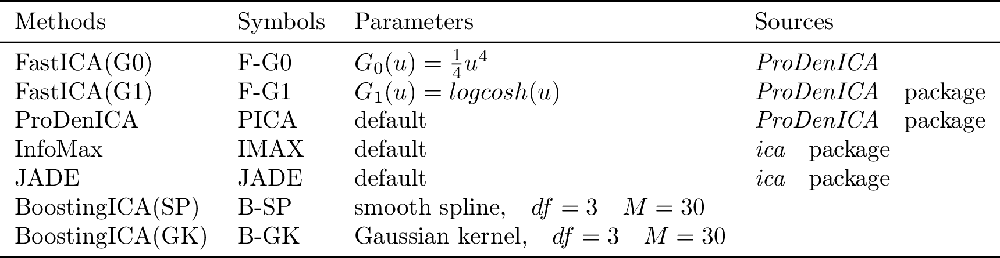
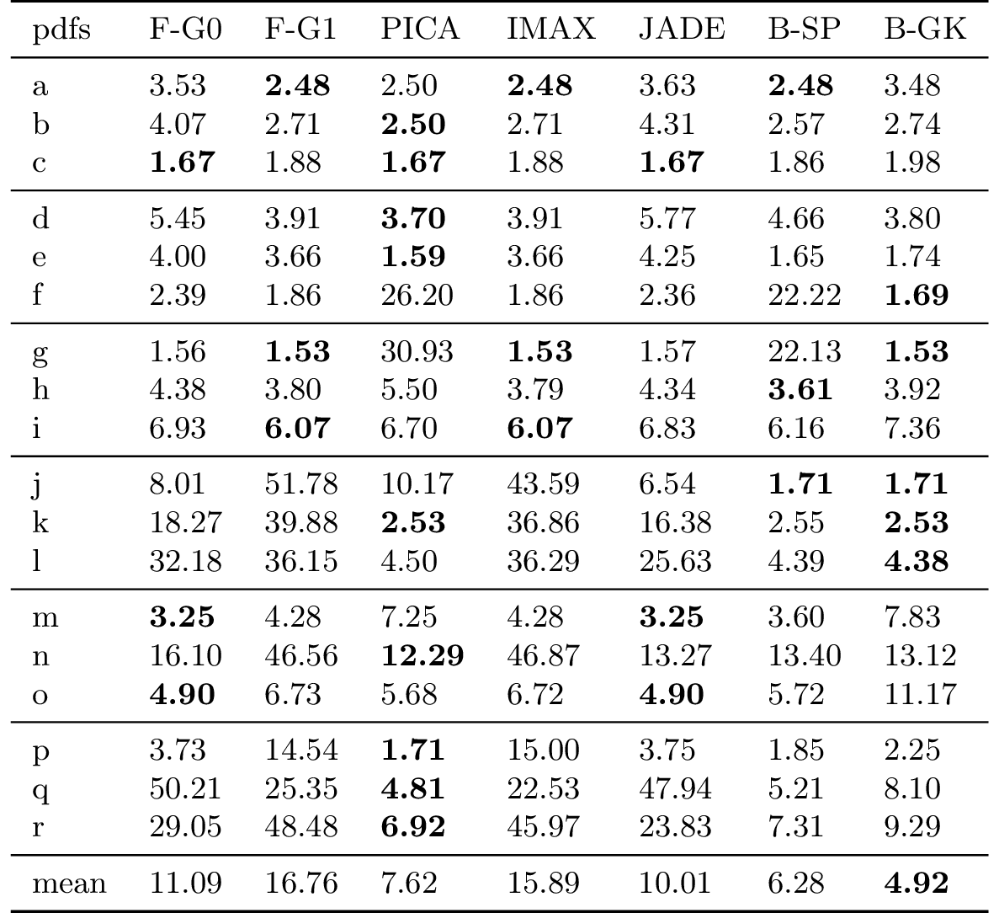
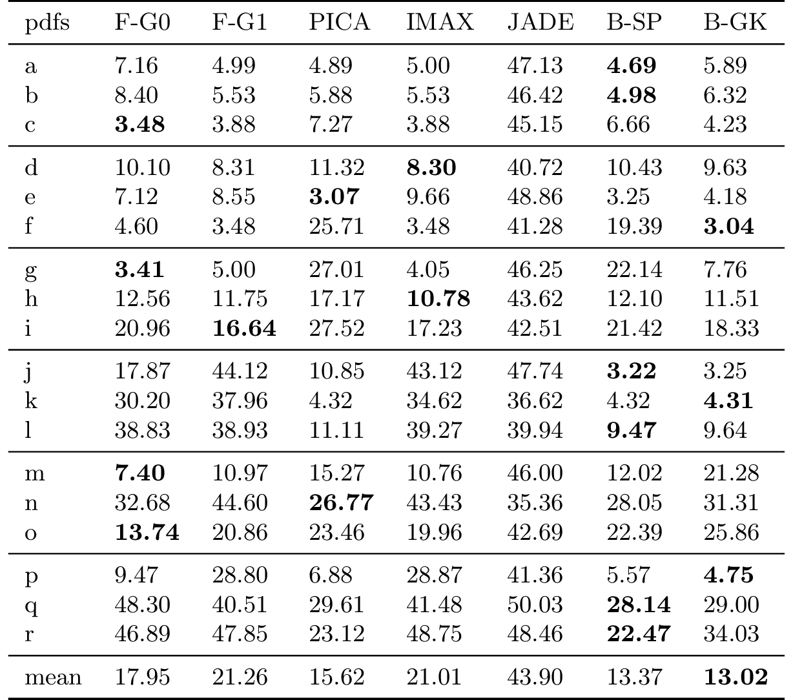
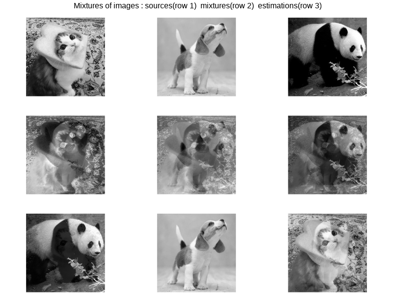
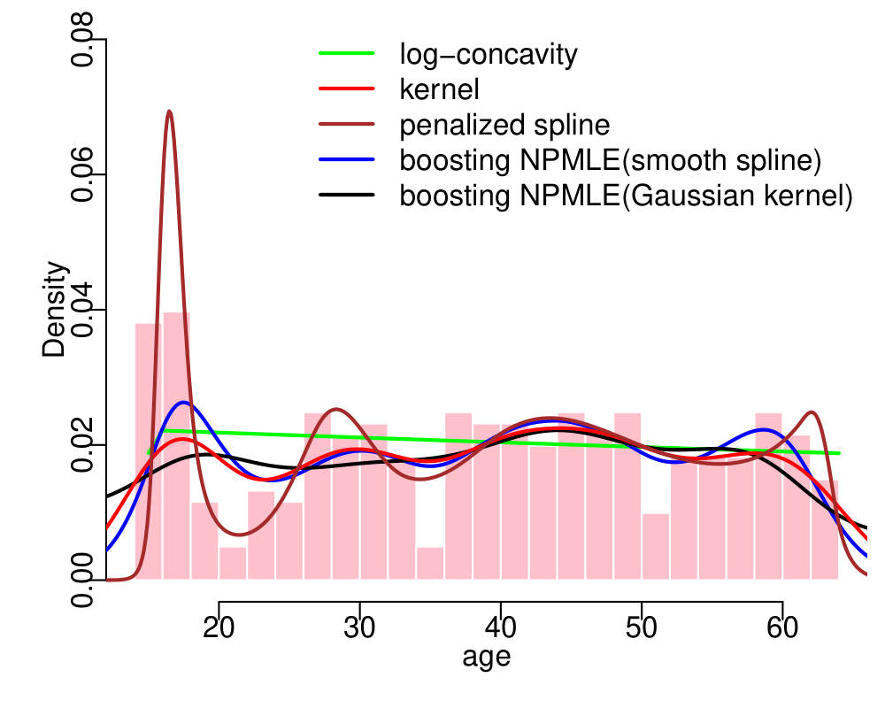
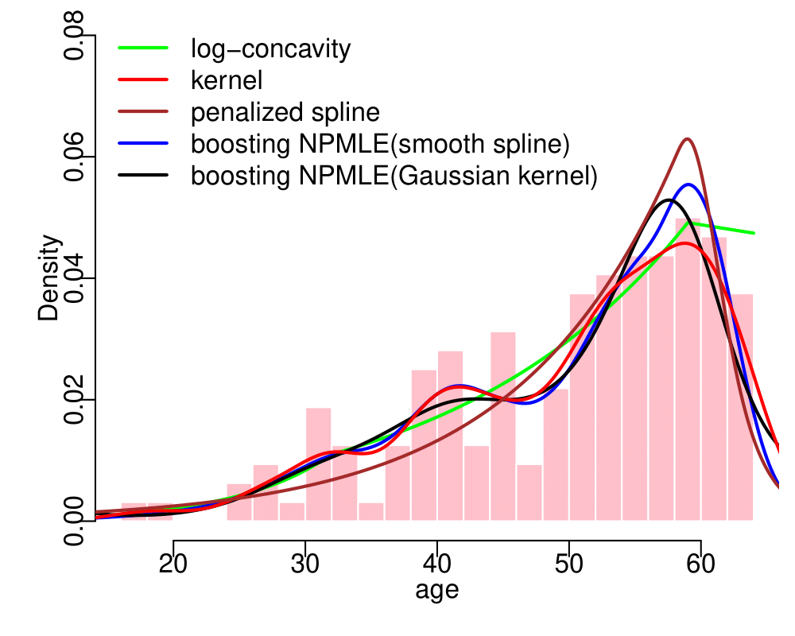
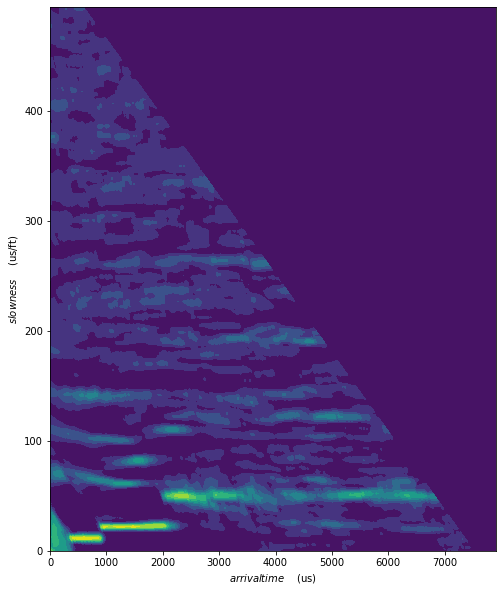
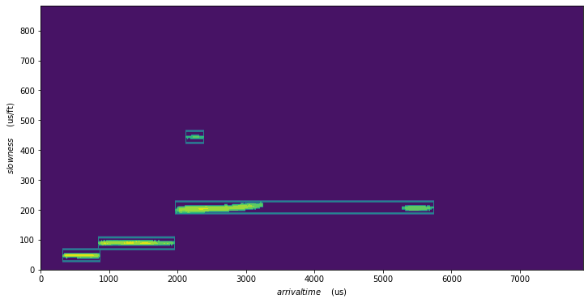
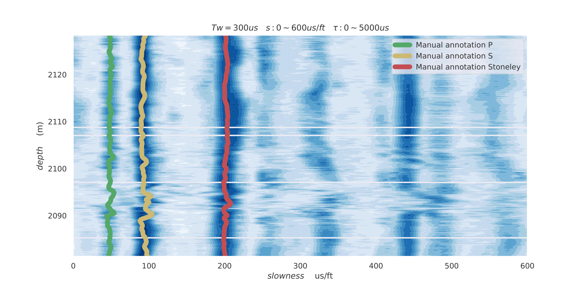

Projects
2020~2021
3.Boosting Independent Component Analysis (2021) .paper.
Abstract—Independent component analysis is intended to recover the mutually independent components from their linear mixtures. This technique has been widely used in many fields, such as data analysis, signal processing, and machine learning. To alleviate the dependency on prior knowledge concerning unknown sources, many nonparametric methods have been proposed. In this paper, we present a novel boosting-based algorithm for independent component analysis. Our algorithm consists of maximizing likelihood estimation via boosting and seeking unmixing matrix by the fixed-point method. A variety of experiments validate its performance compared with many of the presently known algorithms.
Figure 1: Probability density functions of sources.
Table 1: ICA methods used in the experiments.
Table 2: Amari metrics (multiplied by 100) for two-component ICA with N samples .For each pdf (from a to r), averages over 100 replicates are presented. (left N=1000, right N=250) .
 2.Second-order Approximation of Minimum Discrimination Information in Independent Component Analysis (2021).paper.
Abstract—Independent Component Analysis (ICA) is intended to recover the mutually independent sources from their linear mixtures and FastICA is one of the most successful ICA algorithms. Although it seems reasonable to improve the performance of FastICA by introducing more nonlinear functions to the negentropy estimation, the original fixed-point method (approximate Newton method) in FastICA usually degenerates under this circumstance. To alleviate this problem, we propose a novel method based on the second-order approximation of min- imum discrimination information (MDI). Our method consists of the joint maximization between the maximization of MDI via weighted least squares and the estimation of unmixing matrix by the fixed-point method. Simulations validate its efficiency compared with other popular algorithms.
Figure 1: Density functions in ICA simulations.(row 1: sources, row 2: mixtures, row 3: estimations).

Figure 2: Recovery of image sources by MDIICA. From the top row to the bottom row, original sources, mixtures and recovered sources are plotted.
1.Boosting in Univariate Nonparametric Maximum Likelihood Estimation (2020~2021).paper.
Abstract—Nonparametric maximum likelihood estimation is intended to infer the unknown density distribution while making as few assumptions as possible. To alleviate the over parameteri- zation in nonparametric data fitting, smoothing assumptions are usually merged into the estimation. In this paper a novel boosting- based method is introduced to the nonparametric estimation in univariate cases. We deduce the boosting algorithm by the second-order approximation of nonparametric log-likelihood. Gaussian kernel and smooth spline are chosen as weak learners in boosting to satisfy the smoothing assumptions. Simulations and real data experiments demonstrate the efficacy of the proposed approach.
Figure 1: Density Estimation in Boosting NPMLE. With the increase of boosting iterations, the estimation becomes close to the ground-truth.
 
Figure 2: Estimated conditional densities p(age|chd) to the South African Heart Disease dataset by different NPMLE methods. Histograms of age for the binary response chd separately. (Left : chd = 0; Right : chd=1)
Table 1: Classification performance of different NPMLE methods on South African Heart Disease dataset.

2018~2019
2.Improvements of tuning parameter selection in slowness-time-correlation (STC) method for array acoustic logging (2019).
Background—During the petroleum exploration, the acoustic wave signals are obtained by multiple array acoustic logging tool. The recorded data are the convolutive mixtures of different component waves (P, S, Stoneley), whose slowness-time (the reciprocal of sound velocities) are important in determining the oil and gas reservoirs. Althought slowness-time-correlation (STC) is the most popular method to estimate the slowness-time of different component waves, it suffers from the difficult choices of tuning parameters. In this project, several improvements are proposed to alleviate this problem: 1. Determine the approximate range of tuning parameters firstly by discrete randon transform (DST); 2. Supposing the correlation function is unimodal, golden section search is used to acquire the accurate tuning parameter. 3. Apply the STC method with the given tuning parameters.
Figure 1: Left: the collection of acoustic signals with multiple array acoustic logging tool. Middle: The collected signals in single channel are the mixtures of different component waves (P, S, Stoneley). Right: The collected signals in multiple (8) channels are the convolutive mixtures (with time delay) of different component waves. The goal of our method is to estimate the slowness-time (the reciprocal of sound velocities) of different component waves via the multiple channel data.
  
Figure 2: Left: determine the approximate range of tuning parameters firstly by discrete randon transform (DST). Middle: acquire the accurate tuning parameters via golden section search, which will be directly used in STC method (from bottom to top are the slowness-time of P waves, S waves, and Stoneley waves). Right: The slowness-time of different component waves in continuous strata.
1. The SoC design of the acoustic signal acquisition system in multiple array acoustic logging tool.(member 2018~2019).
Background—Considering the high temperature environment in petroleum exploration, an acoustic signal acquisition system is designed based on the low-power Microsemi SoC. My duties are consisted of two parts: C programming in ARM and VerilogHDL programming in FPGA. I programmed the scheduler of acoustic signal processing system and the design of sensor peripherals in ARM. Then I implemented several drivers via state machines in FPGA, such as Analog to Digital Coverter (AD7609), APB buscommunication (SRAM, interrupt, handshake protocal), measuring temperature module (TMP112), and EDIB (MIL-STD-1553) data bus.
Figure 1: Left: the multiple array acoustic logging tool used in petroleum exploration. Middle: debugging in the laboratory. Right: The multiple channel data recorded by the acoustic signal acquisition system.